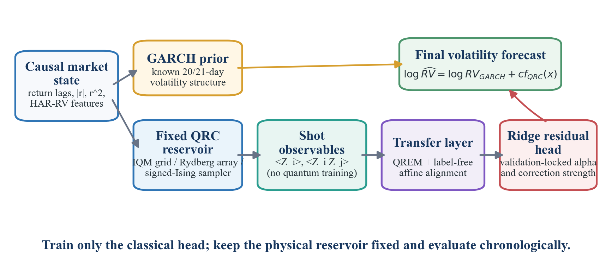
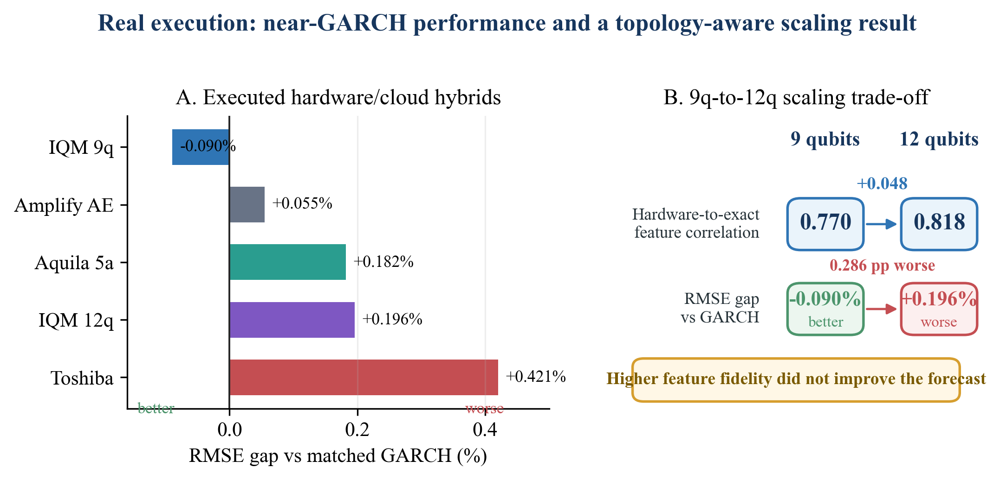
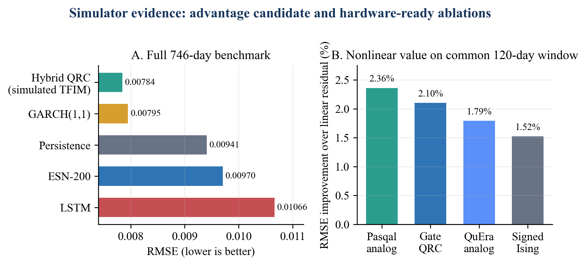

A GARCH-anchored hybrid whose fixed quantum reservoir learns only the residual a strong econometric model misses — executed on real IQM Emerald and QuEra Aquila hardware, not just simulated.
A classical GARCH prior protects the baseline; a fixed physical reservoir supplies nonlinear residual features. Only a linear readout is trained — zero correction recovers GARCH exactly.

Every bar is a completed run on real quantum or cloud hardware, scored against GARCH on identical held-out days. More qubits raised feature fidelity but did not improve the forecast.

Negative gap = better than GARCH. The 9-qubit point gain is not statistically significant — the honest claim is hardware-level competitiveness.
In simulation, QRC ≈ GARCH — GARCH has a structural edge on this target. On real hardware the hybrid stays within 0.43% RMSE of GARCH across three substrates and transfers faithfully from simulator to QPU. We claim hardware-level competitiveness and portability, not proven quantum advantage.
The mechanism study: only the transverse-field, signed-coupling reservoir reproduces the full simulated edge — isolating what the quantum dynamics actually contribute.

A credit-safe judge notebook rebuilds the entire headline — tables, bootstrap intervals, and figures — from committed evidence in ~8 seconds. No tokens read, no network calls, no paid jobs.
Open notebooks/phase3_qbraid_reproducibility.ipynb or click Launch.